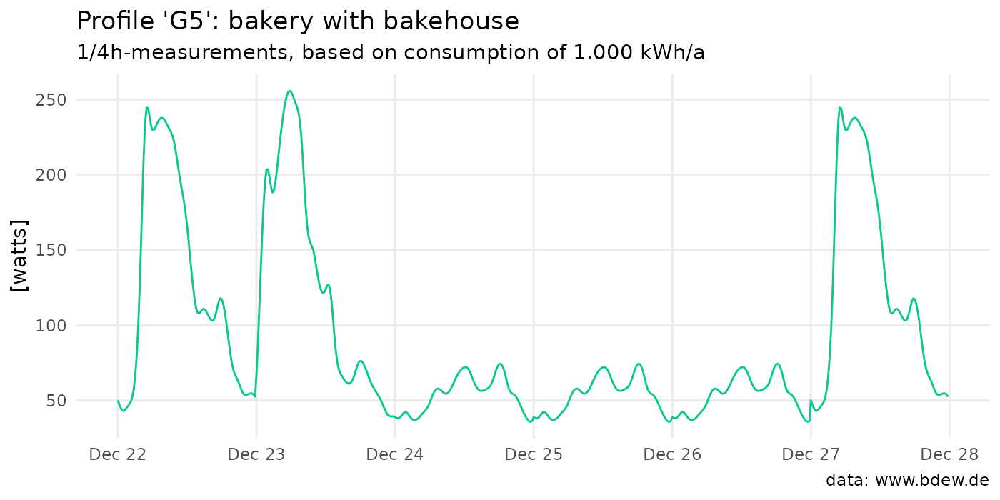
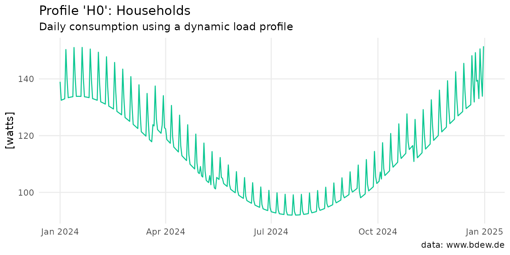

Generate a standardized load profile
Source:vignettes/algorithm-step-by-step.Rmd
algorithm-step-by-step.RmdThe goal of this vignette is to show step by step how the algorithm
of the function get_load_profiles() works. The data in the
load_profiles data-set forms the basis for all subsequent
steps. There are 96 values for each combination of profile, period and
day. These are 1/4-hour measurements and represent a standardized load
profile (German: “Standardlastprofile”). This data was derived in 1999
on the basis of 1,209 load profiles and data from low-voltage
customers1.
Those 96 values in watts for each day are normalized to an annual consumption of 1.000 kWh. So if we sum up all the quarter-hour consumption values for a year, the result is (approximately) 1,000 kWh/a.
library(standardlastprofile)
H0_2023 <- get_load_profile(
"H0",
start_date = "2024-01-01",
end_date = "2024-12-31"
)“Hold on - didn’t you just say 1,000?!”, you might be thinking. Yes you are correct, we must convert power units into energy units. The values returned are 1/4h measurements in watts. To convert the values to watt-hours, we must hence divide them by 4; and since one watt-hour is equal to 1/1000 kilowatt-hour, we divide also by 1,000:
Algorithm step by step
When you call get_load_profiles() to generate a load
profile these steps are performed:
Generate a date sequence from
start_datetoend_dateMap each day to combination of
dayandperiodUse result from 2nd step to extract values from
load_profiles2Apply polynomial function to values of profile H0
Return data3
Generate a date sequence
In the very first step a date sequence is created from
start_date to end_date based on the user
input. Here is a simple example; the result is a vector of class
Date:
#> [1] "2023-12-22" "2023-12-23" "2023-12-24" "2023-12-25" "2023-12-26"
#> [6] "2023-12-27"Map each day to a period and a weekday
When analyzing the 1,209 load profiles, the study found that consumption varies both over the course of the year and over the days within a week. However, it was also found that there was no significant difference in consumption between Monday and Friday for each group. For this reason, the days Monday to Friday are grouped together as ‘workdays’.
December 24th and 31th are considered a Saturday too, if they are not a Sunday, and public holidays are set to a Sunday. The package supports nationwide, public holidays for Germany only. Those were retrieved from the nager.Date API and are listed below for 2024:
- Jan 1: New Year’s
- Mar 29: Good Friday
- Apr 1: Easter Monday
- May 1: Labor Day
- May 9: Ascension Day
- May 20: Whit Monday
- Oct 3: German Unity Day
- Dec 25: Christmas Day:
- Dec 26: Boxing Day
The 3 periods are defined as:
-
summer: May 15 to September 14 -
winter: November 1 to March 20 -
transition: March 21 to May 14, and September 15 to October 31
The result of this second step is a mapping from each date to a so-called characteristic profile day, i.e. a combination of weekday and period:
wkday_period <- standardlastprofile:::get_wkday_period(date_seq)
data.frame(date = date_seq, day = wkday_period)
#> date day
#> 1 2023-12-22 workday_winter
#> 2 2023-12-23 saturday_winter
#> 3 2023-12-24 sunday_winter
#> 4 2023-12-25 sunday_winter
#> 5 2023-12-26 sunday_winter
#> 6 2023-12-27 workday_winterAssign consumption values to each day
The obvious next step is to assign the 1/4-hour power values
contained in the load_profiles data set to each
characteristic profile day created in the previous step. This is the job
of the get_load_profiles() function.
G5 <- get_load_profile(profile = "G5",
start_date = start_date, # defined above
end_date = end_date)The analysis of the data showed that the load fluctuations for
commercial and agricultural customers are moderate and can therefore be
easily mapped using workday, Saturday and Sunday profiles in three
annual periods. This method produces the annual load profile for
customers/customer groups G0 to G6 and
L0 to L2, and it is referred to in the study
as the ‘static load profile’, as it can be determined directly from the
3x3 characteristic profile days.
Here is the code to reproduce the plot for profile G5
from the README:
library(ggplot2)
ggplot(G5, aes(start_time, watts)) +
geom_line(color = "#0CC792") +
scale_x_datetime(
date_breaks = "1 day",
date_labels = "%b %d") +
labs(
title = "Profile 'G5': bakery with bakehouse",
subtitle = "1/4h-measurements, based on consumption of 1.000 kWh/a",
caption = "data: www.bdew.de",
x = NULL,
y = "[watts]") +
theme_minimal() +
theme(
panel.grid.minor.x = element_blank(),
panel.grid.minor.y = element_blank()
) +
NULL
Generate a dynamic load profile H0
In contrast to most commercial and agricultural businesses, which
have a relatively even and a fairly constant power consumption over the
course of a year, households on the other hand have a continuously
decreasing load from winter to summer (in Germany at least). This fact
is taken into account when you call get_load_profile() by
applying a 4th order polynomial function to the values of profile
H0:
\[ x = x_0 (-3.92e^{-10} \times d^4 + 3.20^{-7} \times d^3 - 7.02^{-5} \times d^2 + 2.10^{-3} \times d + 1.24) \] Where:
- \(x\) is the resulting ‘dynamic’ quarter-hour value
- \(x_0\) is the static quarter-hourly value of the profile
- \(d\) is the day of the respective year, starting at 1 on January 1st
Hence for household customers, things look a little different, at least under the hood, as can be seen in the following graphic. It shows the aggregated daily values for 2023 created at the beginning of this vignette:
get_load_profile(profile = "H0",
start_date = "2023-01-01",
end_date = "2023-12-31")